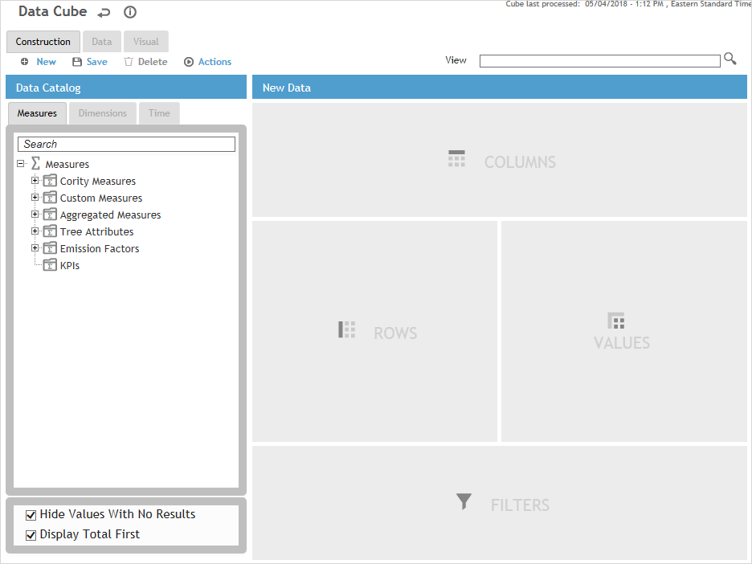
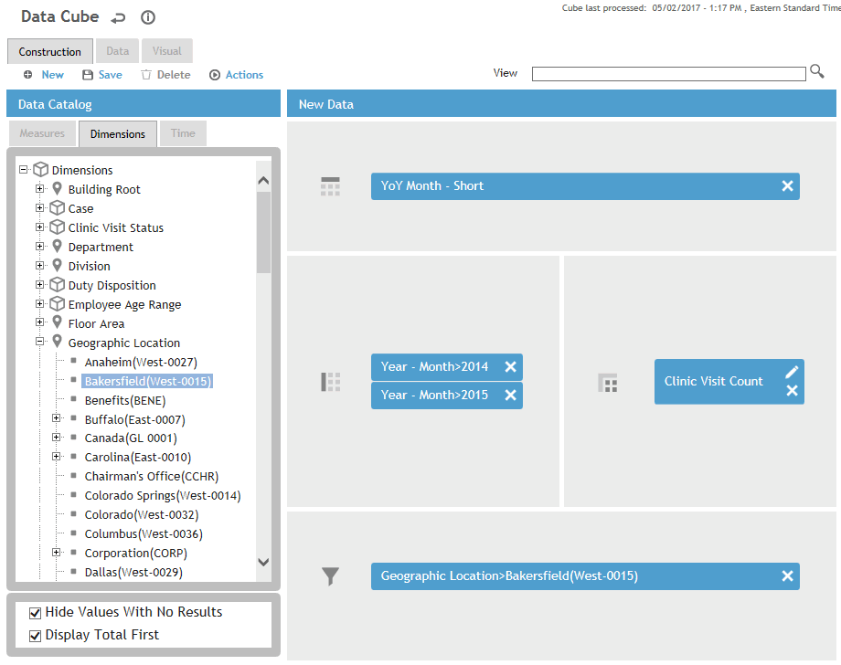
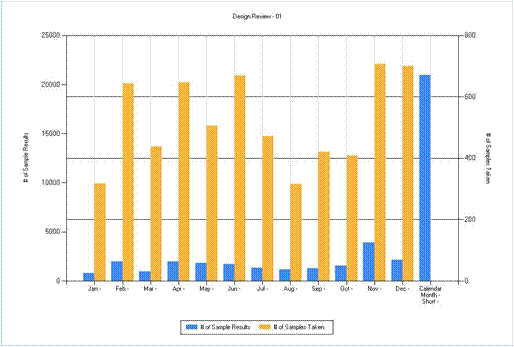
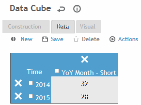
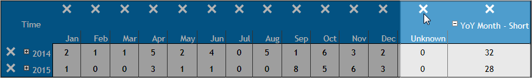
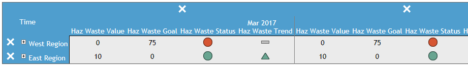
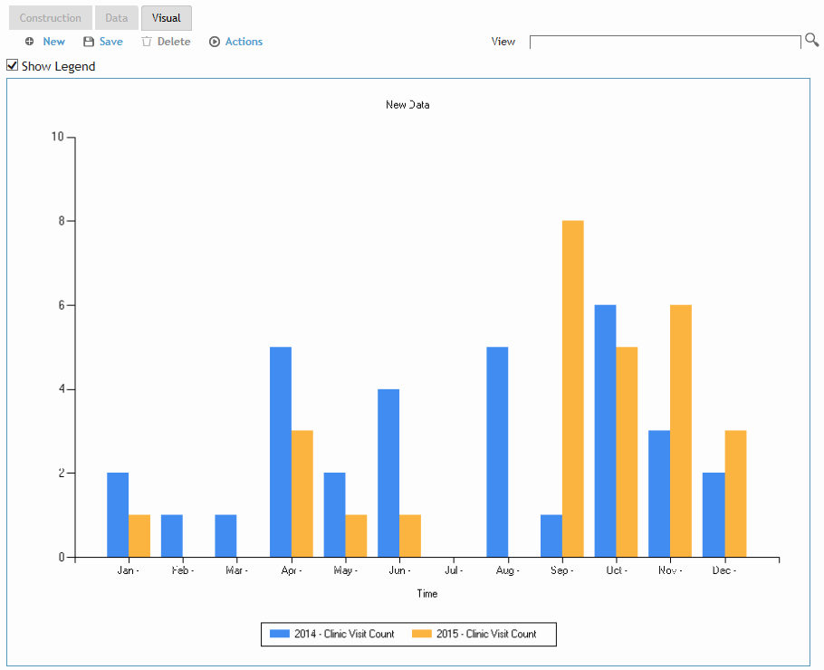

Deep, interactive and flexible data visualization is a complicated task which requires the combined skills of specially-trained IT professionals. A simple database is incapable of instant and side-by-side data comparison without experiencing performance delays. Cority's Data Cube is able to perform this comparison; the cube also simplifies data visualization for any user. Data cube users can browse, compare, and generate graphs based on data coming from Cority's built-in metrics and/or custom metrics easily, intuitively and dynamically. The Data Cube is also useful for comparing actual values to targets within the same graph.
Cority data cubes are updated by a scheduled task, therefore the data is not real time.
A Data Cube is built by combining measures, dimensions, and filters, for a specific period of time. You construct data tables by dragging and dropping measures and dimensions in the “Construction view.” You can then view and modify the data table in the “Data view.” These modifications may include hiding columns or rows of data and/or expanding or contracting data aggregation (or subtotalling). Once you have built your data table you can toggle to the “Visual view” to confirm the presentation of this information in graphical form to meet your specific needs.
When building a Data Cube you can:
Hide rows or columns of data from the tables/graphs.
Aggregate and view data at various levels using tree functionality.
Combine line and bar graphs; display rolling averages.
Combine/compare multiple related measures in one table/graph.
Combine/compare Cority system measures (e.g. incident counts) with your own custom measures (e.g. incident targets).
Save the view for future reference.
Pin graphs to your dashboard and/or share graphs with other users; drill down / filter Data Cube parameters directly from your dashboard.
Be sure to read Understanding the Concepts if you are not familiar with Data Cubes.
For examples of building Data Cubes, see Data Cube Examples.
In the Business Intelligence menu, click Data Cube.
The Data Cube opens on the Construction tab; this is the starting point for constructing data. The Construction view consists of the Data Catalog and the construction zone.
The data catalog, on the left, contains different measures, dimensions, and time dimensions that can be used to filter data.
The construction zone, on the right, contains the following areas:
Values — where you identify the measures to be enumerated
Columns — where you identify the dimension used to organize data by groups (e.g. based on time, location, organization, etc.)
Rows — where you can identify dimensions used to group the columns into subgroups
Filters — where you can limit the data, e.g. to a particular geographic location.

To improve performance and usability, select the Hide Values With No Results checkbox.
You can also turn off one or more of the GDDLOFB trees via the system
settings.
By default, summary data for a parent element is listed below its child
elements. To have it listed before, select the Display
Totals First checkbox. This is useful in the Advanced
Dashboard so that you can see the totals and choose to expand the
data if you wish to drill down.
Open a view to edit or to base a new view on, or click New to clear any information. The View picklist is limited to views that you have permission to see. By default the list is sorted by Standard Metric first, then by Name.
Drag at least one item from each tab in the Data Catalog to the appropriate drop area on the right (compatible drop areas are highlighted as you drag an item). You should not put two unrelated measures into the same Data Cube table/graph. Although technically you can add as many measures as you would like to a Data Cube query, this is not best practice and can cause performance issues, especially if the Organizational Tree is complex. You should only add the measures you absolutely need.
In the following example, the cube will report on the Clinic Visit Count [Value], grouped by Month [Column]. The data will further be broken down into Rows for each month of 2014 and 2015. Only data for Bakersfield will be included [Filter].

The Measures tab includes Cority measures,
custom measures that have been approved, aggregated measures, Organization
Tree attribute fields, and any emission factors defined in the EmissionFactor
look-up table.
Measures defined as KPIs are listed separately with their component
properties (Value, Goal, Status, Trend). You can drag the entire measure
or individual properties. If you drag the entire measure you can remove
individual properties from the Values drop area.
If you drag KPI Metric, KPI Metric Status, or KPI Metric Trend measures
to the Values section, the Visual Type for any existing measures in
the Values section will become Table. If you drag KPI Metric Value
or KPI Metric Goal to the Values section, the Visual Type for the
measure will become ‘Bar (vertical)' and the Visual Type for any other
measures in the Values section will not be affected.
The Dimensions list only displays values that work
with the selected measures; if you find the values in the Dimensions
tab take a long time to load, turn off the Allow
translations for the datacube system setting to enhance
performance. You can double-click a dimension to open the corresponding
look-up selector and select multiple values to be included. Each Dimension
list also includes an “Unknown” value so that the data can include
entries for which the selected dimension was not populated.
Both Dimensions and Time dimensions can be dropped into either the
Columns or Rows drop area where they will group data into columns
or rows respectively.
If you want to generate rates related to employee hours of work, ensure that the EmployeeHoursOfWork table is populated.
If you delete a measure from a view, dimensions that only applied to that measure are deleted from the Dimension drop areas (Columns or Rows) in that view, and they are also deleted from the Dimensions tab within that view.
To filter your data, drag any Time Dimension or Dimension to the Filters drop area. These must be a sub-level to the Time (or Dimension) selected for inclusion. For example, you may have selected an entire year but want to exclude a month from that year.
Time Dimensions are special dimensions in the Data
Cube, used to filter data by a desired time range. The domain of time
available to slice data is defined in the FiscalPeriod look-up
table; if a date is not included in the table, then records with that
date will be aggregated into the Unknown category.
All measures have different context to the Time Dimensions. For example,
the Time Dimension's context is the record's Test Date when used with
the Audiometric Test Count measure, and Exposure Date when used with
BFE Test Count measure. For a complete list, see Time
Dimension Context.
For each measure, click to select options for organizing, visualizing and analyzing the data:
Select a visual type. If you choose one of the stacked chart types, each dimension used in the Rows area becomes a different segment of the stacked chart. You cannot combine a “table” visual type with any other visual type; see also the Note in step 3 above.
Select how the data should be aggregated. The options are as follows:
Values (default) |
displays the exact value of the measure |
|---|---|
YTD |
displays the computed Year-To-Date values |
3M R-Avg |
displays a rolling 3 month average |
6M R-Avg |
displays a rolling 6 month average |
12M R-Avg |
displays a rolling 12 month average |
For charts only: Select a color for the series, or allow Cority to automatically assign a color.
For charts only: Optionally, plot the measure against a secondary y-axis so that you can view and compare two related series of different magnitudes.

If you created a new view, click Save and enter a name for the view. If you edited an existing view, click Save to update it, or choose Actions»Save view as to save a copy of it under a different name. If you want this view to be available to other Data Cube users, select Standard View. Click OK.
A user with appropriate permissions can view, edit, and delete Data Cube views created by other users, even if not set to Standard View.
If you create a Data Cube query and navigate away without saving it, your query will be gone and you will need to re-create it. You should always save your view as a precaution.
To change the name of a view you created, or to change the view to (or from) a Standard View, choose Actions»Properties.
Build a new Data Cube as described above, or retrieve a saved View from the list at the top. When you change the view, the Dimensions tab is updated to list only those dimensions that will work with the measures present in the view.
When you first build a Data Cube, the data is retrieved and displayed. The Data Cube is then included in regular background processing (check with your administrator for the processing frequency). Each subsequent time that you view the Data Cube, you can see the last processed date and time in the top right.
Click the Data tab to view the data in a tabular format. Numeric field values use the format specified in the Number Style system setting. Per our earlier example, the results initially show the total count for each month.

You can expand items or delete a row or column (note, if you delete a row or column, the only way to retrieve it is to recreate the Data Cube). In our example, we don’t want to include the Unknown and YoY Month columns in our graph, so we would click the X above each column.

If the data includes a KPI measure, you will see icons that represent the value compared to the target and the value compared to the previous value. This functionality allows you to generate dashboard scorecards for Custom Measures that have KPI properties. A scorecard shows the measure's value along with the status of that value against the measure's target and the trend of its values, period-over-period.

To export the data to Excel, choose Actions»Export
to Excel. This exports the data exactly as it appears in the
Data tab (i.e. taking into account any items you have expanded or
deleted).
To export the data to CSV with the rows expanded, choose Actions»Export
to CSV. There must be no dimensions in the Columns drop area
and at least one measure in the Values drop area and one dimension
in the Rows drop area. The header rows will include a number and a
name so that you can easily distinguish between rows (dimensions)
that would otherwise have the same name. The CSV file will be named
the same as the view (if the view is not named, the CSV will be saved
as export.csv).
Click the Visual tab to view the data in visual format. If the visual type is “table”, you will just see the table as it will appear in the Advanced Dashboard.
If the visual type is one of the chart types, you will see the chart as well as several formatting options:

You can choose to show or hide the legend.
To add, remove, or change the color of a target in the graph, choose Actions»Manage Targets.
To change the background color or legend appearance, choose Actions»Format Chart.
Use the other format actions (Format X Axis, Format Y (Primary) Axis, or Format Y (Secondary) Axis) to configure options for the axis line, title, labels, gridlines, tick marks, and limits. These can be configured differently for each axis. If the limits for either of the Y axes are not 0 or null and the maximum value is greater than the minimum value, these values will be applied to the corresponding Advanced Dashboard chart.
See Example
5: Customizing Graphs for examples of formatting graphs.
Saved Data Cube views can be included on your Dashboard views (see
Using the
Dashboards).